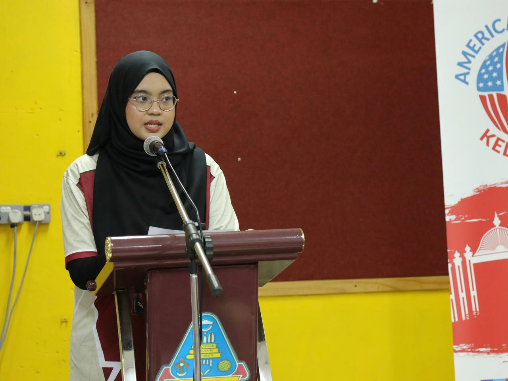
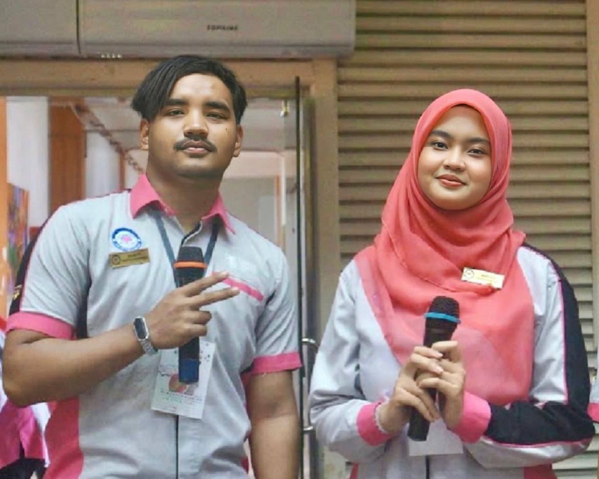
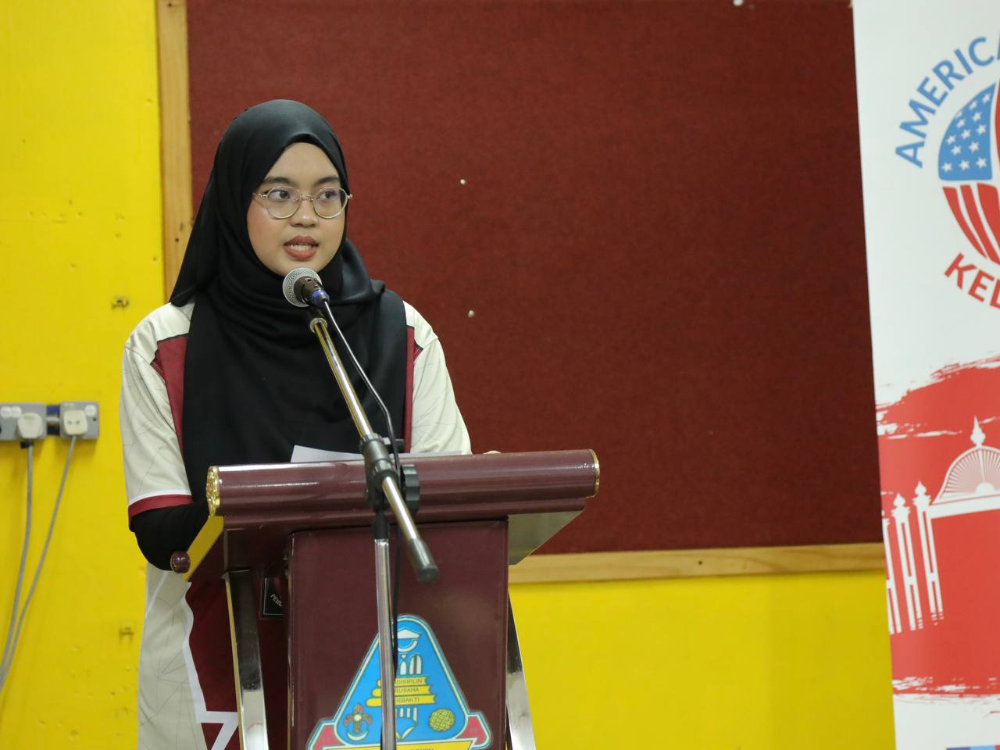
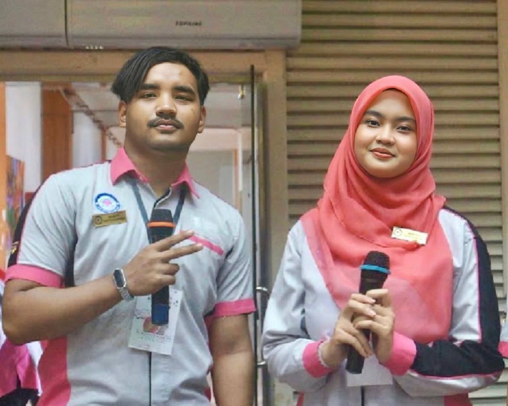
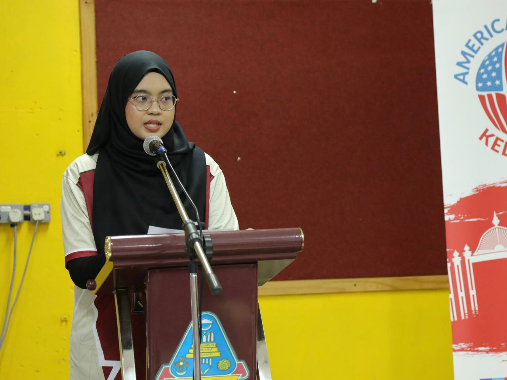
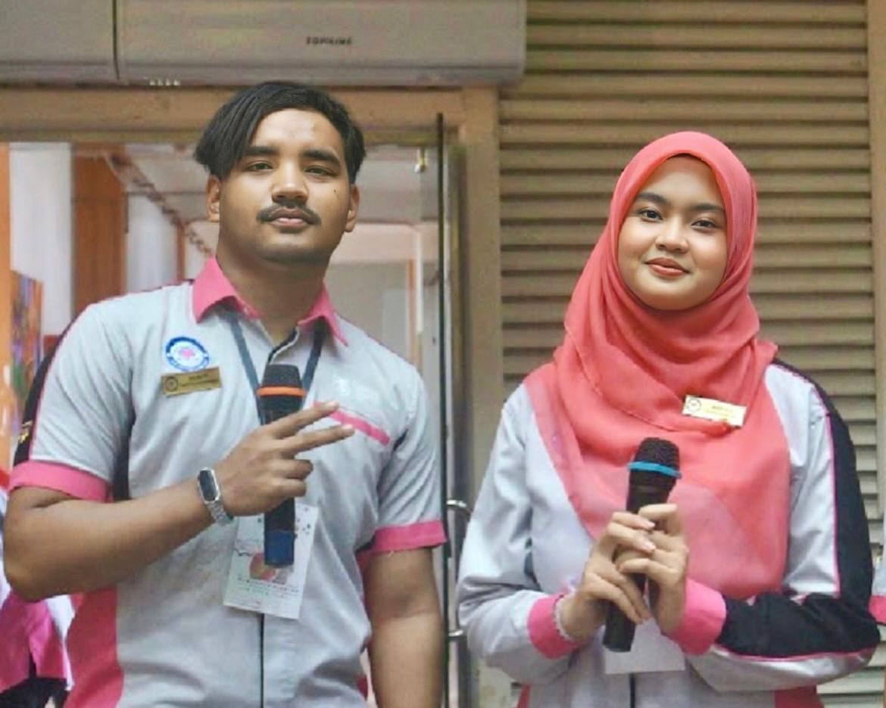

My Latest Achievements

 



Hey there! Welcome to my website, where you’ll get to know a bit more about me, Ameyra. I’m in my final semester of a Diploma in Information Management, and this is where I share my journey, experiences, and everything I’m passionate about. From my academic highlights to my love for organizing information and exploring new tech, it’s all here. Feel free to look around, learn about my story, and see how I’m working toward making my mark in the world of information management. Thanks for stopping by—I hope you enjoy getting to know me better!


Email: ameyrasukri@gmail.com
Phone: +60148896373